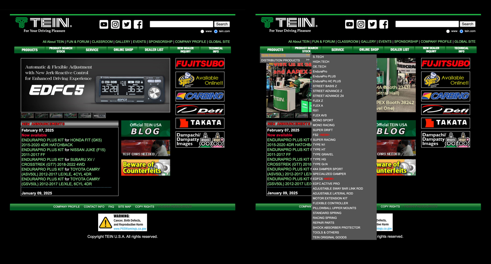
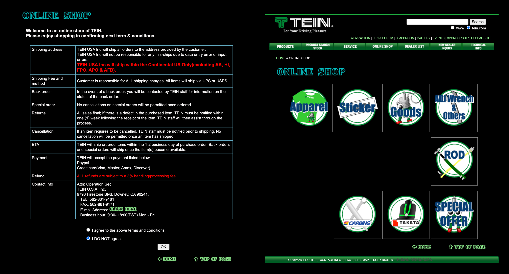
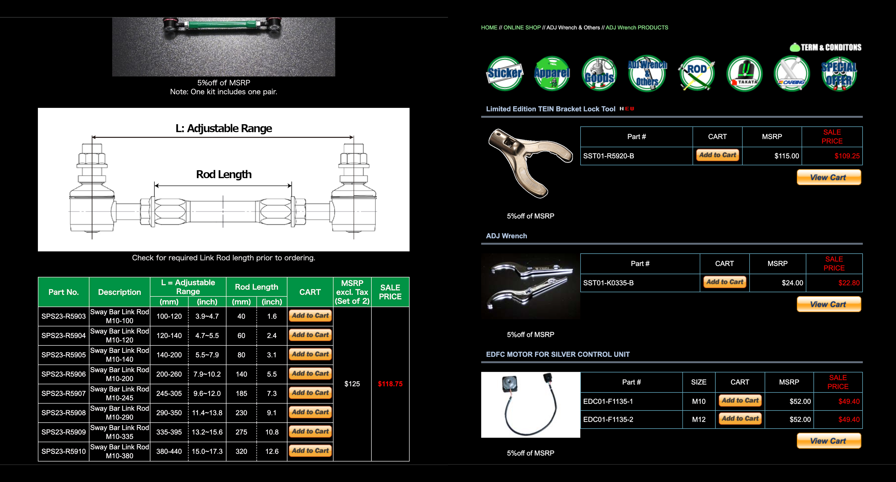
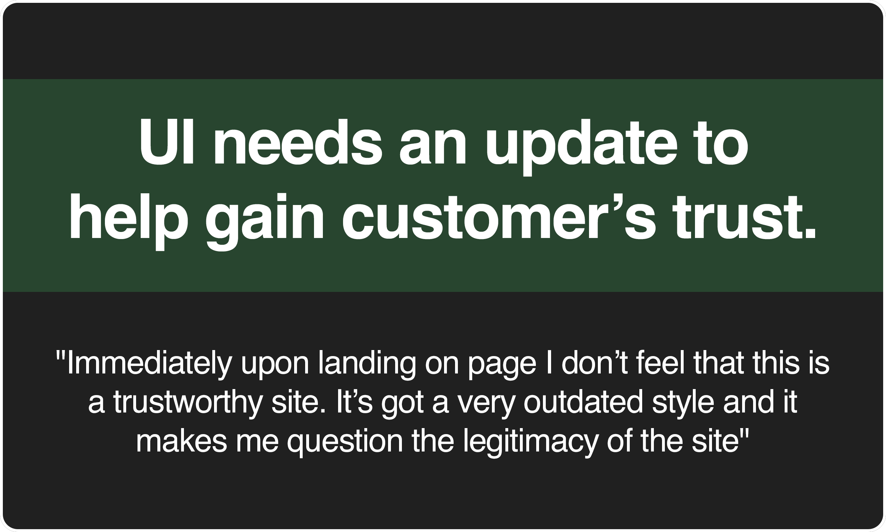
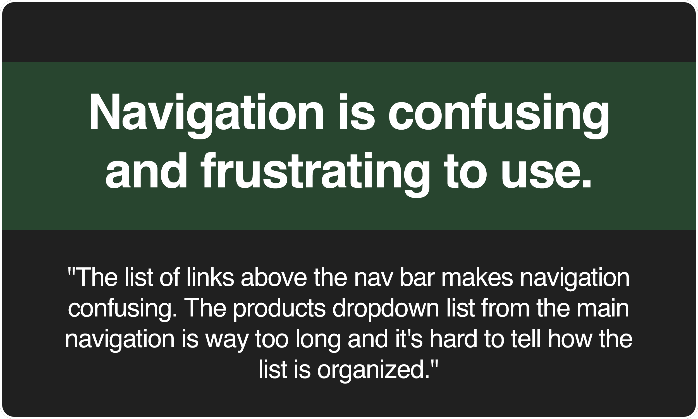
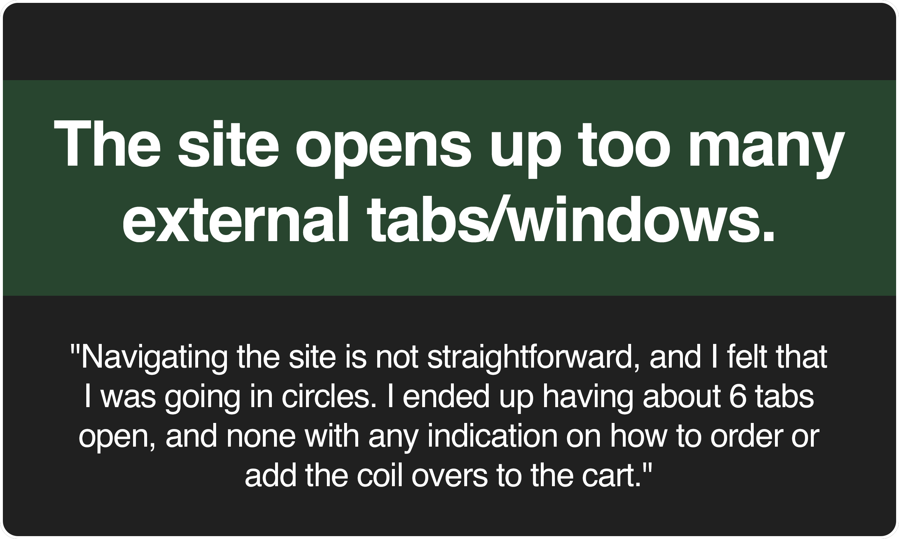
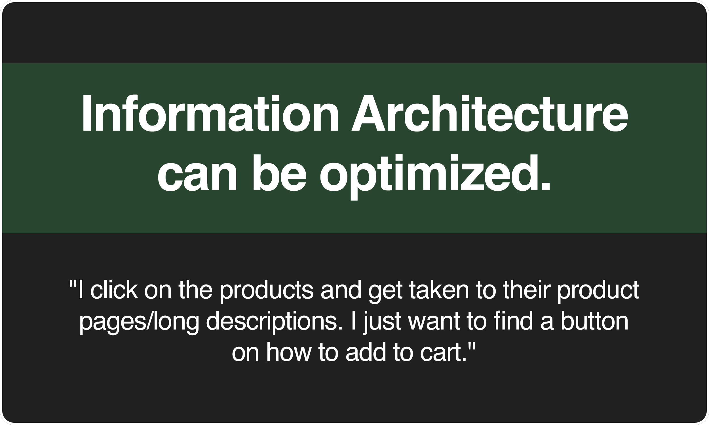
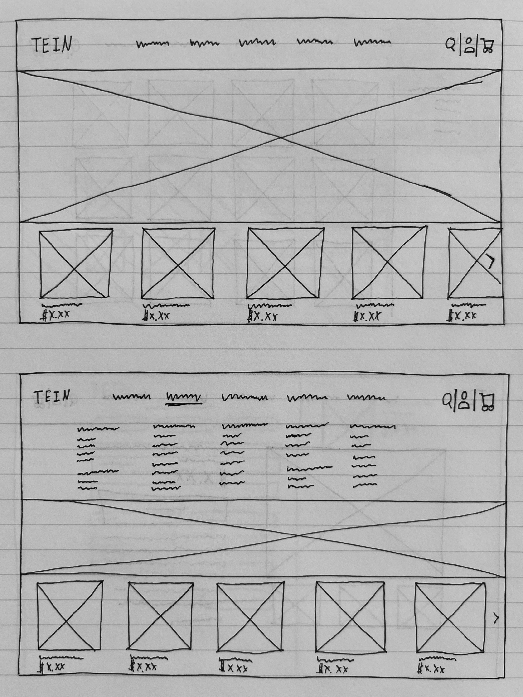
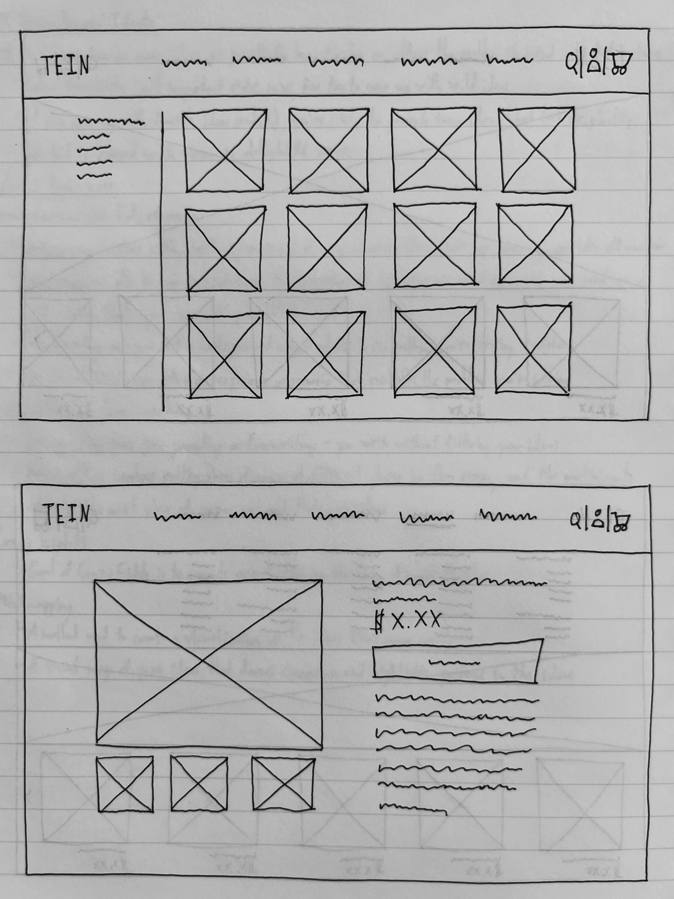
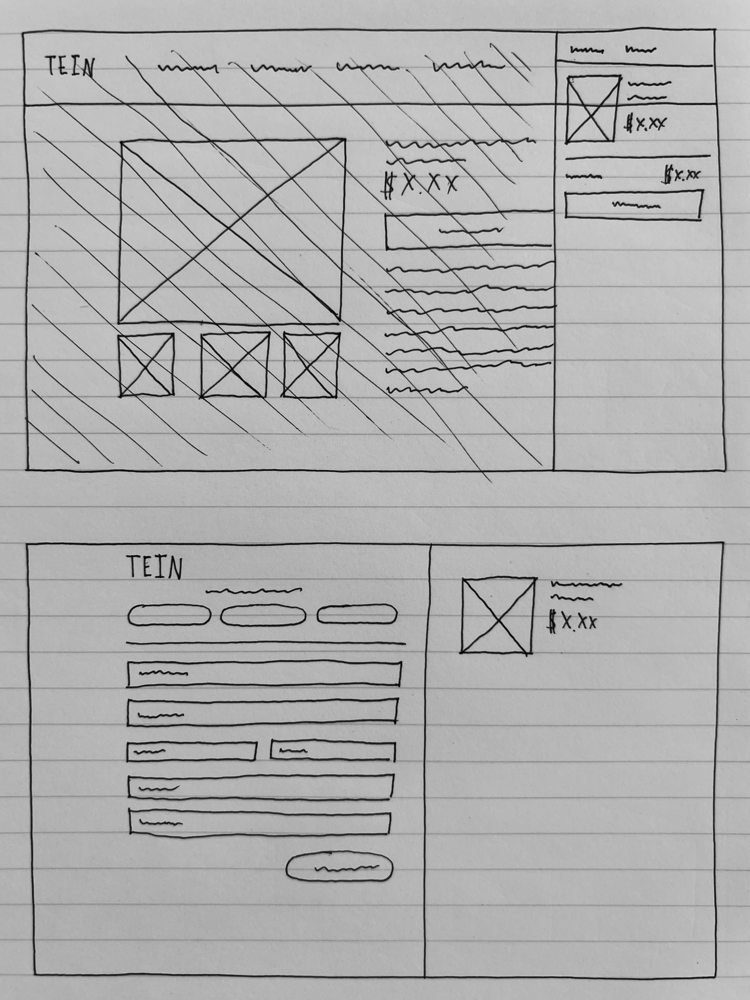

Tein USA is a Suspension system and components manufacturer and supplier that has been in the automotive
industry since the 1960's. Their current website is out-dated, not mobile-friendly, and can definitely use
a refresh. I tasked myself with redesigning the website to streamline the buying process in order to drive
direct sales from customers and increase customer traffic.
Task: Redesign a responsive ordering site
My Role: Lead UX/UI Designer
Platform: Web, Mobile
Tools: Figma
Context: Personal Project
Timeline: 80 Hours
The Challenge:
How might we improve the function and layout of a website to streamline the process of navigating through
and making a purchase on the website more efficient and increase direct sales to customers?
The Outcome:
A redesigned website centered around easy navigation and intuitive information architecture.
Background
Understanding the Existing Conditions
Tein USA currently distributes their products mostly through third-party vendors rather than direct sales to customers. The functionality and usability of their website doesn't necessarily make it easy for the user to make a purchase through Tein USA's website. The ordering process is complicated and confusing, difficult and convoluted navigation made the site frustrating to use, and a major UI update was needed as well.
Why Redesign?
The current website is functional and useful for providing product information and information about the company,
but it's not very useable or helpful for customers looking to buy parts. The online shop mainly sells TEIN
merchandise and small goods and tools, but there are no listings for larger suspension components such as springs
and coilovers, just a stock check system. The customer has to find the part number and then reach out to TEIN
directly in order to place an order for larger suspension components, adding onto the buying process for the customer.



 I stepped in to help redesign the site to help come up with a solution for the organization and user flow issues
that the customers are facing.
I stepped in to help redesign the site to help come up with a solution for the organization and user flow issues
that the customers are facing.
Research
Let's gain some perspective from the customers
I started the research process by reaching out to car enthusiasts online to understand how they navigate through the current site, and what problems and challenges that they came across when trying to make a purchase on TEIN's website. I tasked the research participants with placing an order for a set of TEIN Flex Z coilovers for the Honda S2000. Some users were already turned off by the home page and the interface, others had difficulty figuring out how to place an order for the coilovers. Learning about the different problems that users faced while navigating the website helped provide valuable insight to the user's pain points.
Key Findings
   The research helped me gain a better understanding of how the interface and information architecture impacted the current user experience. The next steps were to define the problems that the users are facing, and figuring out which problem has the most impact on the user experience.

Define
Who is the target audience?
I created user personas for two different types of car enthusiasts to help me get a better understanding of who I'm designing for and the problems that I'm trying to solve.


Laying out the user flow
One of the top priorities for the redesign was redesigning the navigation. I created a few simple flow maps to help me understand how users move between pages.

Designing for the MVP
In order to help me decide what features to include in the first iteration of the redesign, I created a feature roadmap. I decided to focus more on the features that had a larger impact on the navigation through the site.

High Priority changes for Tein website redesign:
- Improve navigation between pages
- Update product page layout
- Complete UI redesign
Design & Testing
Paper Prototyping
I started out with some paper wireframe sketches to help me jot down quick ideas and make any necessary changes without having to worry about the small details.
  Testing the solution
I created a low fidelity prototype of the desktop view on Figma so I could conduct usability tests. I wanted to make sure that the solution that I came up with worked well for the users and helped them achieve their goal before creating a fully designed prototype.
Hi Fidelity Prototype
I gave the users a similar task of locating a set of Flex Z coilovers for the Scion FR-S, adding it to their cart, and placing an order. Overall, most users were able to complete the task with little to no issues, and only a few had some difficulty reaching the end goal. The updates to the UI and user flow showed a positive improvement overall based off of the test results.
User Feedback
- "Overall, if I need to make a purchase on this website, I feel that I could easily do so even without knowing anything about coil overs."
- "For the Mobile View, navigating to the Flex Z coilovers from the hamburger menu was extremely easy. The text was legible and not glaring, especially with the choice of contrast."
- "This updated layout looks industry-standard, modern, and gives the consumer a sense of credibility."
Findings & Future Considerations
Findings
Although this was a personal project, I did gain valuable experience working with users to gain some insight as to what makes a better product that focuses around user needs.
Future Considerations
- More usability testing:
- Conduct more usability tests with high fidelity prototypes to get more feedback and to see what other features and functions can be improved.
- Fully Designed Site:
- For this project I focused on designing out the MVP, so I left out other screens that were not a part of the user flow.
-
Possibly work with TEIN to get their website updated:
- Get in contact with a developer to make a fully usable site for TEIN.